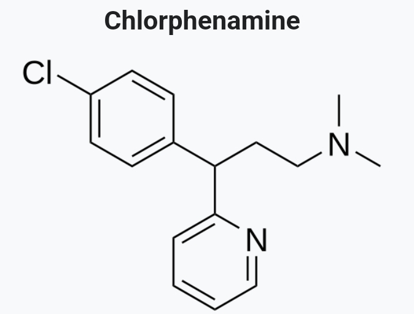

国内可以买到氯苯那敏的单方制剂，价格非常便宜，1元可以买到100t
不像其他抗组胺药，氯苯那敏似乎没有催眠功能，至少窝是这样的
参考资料: 氯苯那敏 https://t.co/mWDlJgPVrF
氯苯那敏与右美联用 https://t.co/e1uBIM5cPl
二氢可待因 https://t.co/EFWoK21Cdp
CYP2D6抑制剂
https://t.co/lctx7XNRvW

不像其他抗组胺药，氯苯那敏似乎没有催眠功能，至少窝是这样的
参考资料: 氯苯那敏 https://t.co/mWDlJgPVrF
氯苯那敏与右美联用 https://t.co/e1uBIM5cPl
二氢可待因 https://t.co/EFWoK21Cdp
CYP2D6抑制剂
https://t.co/lctx7XNRvW

每日💊科普(day1)——氯苯那敏
氯苯那敏属于第一代抗组胺药，用途为抗过敏。它抑制血清素再摄取，拮抗组胺H1受体。无娱乐价值或滥用价值。
氯苯那敏存在于多种复方制剂中。在美国，曾经最流行的被滥用的右美沙芬制剂是与马来酸氯苯那敏复方制剂，服用者遭受严重副作用，如躁狂，血清素综合征，甚至死亡。 https://t.co/woe3JbFMd4
氯苯那敏属于第一代抗组胺药，用途为抗过敏。它抑制血清素再摄取，拮抗组胺H1受体。无娱乐价值或滥用价值。
氯苯那敏存在于多种复方制剂中。在美国，曾经最流行的被滥用的右美沙芬制剂是与马来酸氯苯那敏复方制剂，服用者遭受严重副作用，如躁狂，血清素综合征，甚至死亡。 https://t.co/woe3JbFMd4